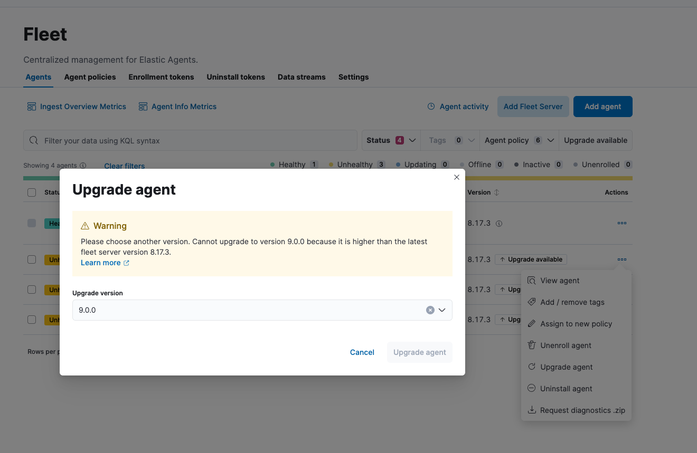

Fleet and Elastic Agent 8.18.0
editReview important information about the Fleet and Elastic Agent 8.18.0 release.
Known issues
editInaccurate option to upgrade across major releases appears in Fleet UI
Details
In late 8.x releases, there’s a bug in the Fleet UI that causes 9.0.0 to appear as an option for Elastic Agent upgrades. This option results in an error when selected, as upgrades across major releases are not supported for Elastic Agent. For example, an agent can’t be upgraded to version 9.0 while Kibana and Fleet Server are on version 8.x.
The Elastic Agent upgrade is not selectable:

The Fleet Server upgrade is selectable, with an inconsistent UI state and error on submit:

Impact
In the 9.x releases, the option that appears in the UI for an upgrade across a major release should be ignored.
New features
editThe 8.18.0 release Added the following new and notable features.
- Fleet
- Elastic Agent
-
- Add ability to run the Elastic Distribution of OTel Collector at the same time as other inputs. This feature is in technical preview. #5767 #5796
- Add a sample configuration to be used when deploying the OpenTelemetry Kube Stack Helm Chart. #5822
- Add the GeoIP OpenTelemetry processor to Elastic Agent. #6134
- Add the OpenTelemetry routing connector to the Elastic Distribution of OTel Collector. #6210
- Add support for the OTel loadbalancing exporter to Elastic Agent. #6315
- Add a new Kubernetes deployment of the Elastic Distribution of OTel Collector named "gateway", to simplify the daemonset collector configuration and unify managed/self-managed scenarios. #6444
-
Add the
componentscommand for Elastic Agent in OTel mode, to list the supported components the the Elastic Distribution of OTel Collector includes. #6539 -
Add the
receivercreatorandk8sobservercomponents to the Elastic Distribution of OTel Collector to help cover autodiscovery scenarios in Kubernetes. #6561 -
Add the
kafkaexporterandkafkareceiverthe Elastic Distribution of OTel Collector to help prepare support for a Kafka output. #6593 #6562 - Add the nopreceiver to the Elastic Distribution of OTel Collector. #6603
- Change the default gRPC port to 0 when Elastic Agent is run in a container. #6585
Enhancements
edit- Fleet
-
- Enable sub-feature privileges for Fleet. (#203182)
- Fleet Server
- Elastic Agent
-
- Re-enable the OTel subcommand on Windows. #6068 #4976 #5710
- Update the Elastic Agent to only run composable providers if they are referenced in the agent policy. #6169 #3609 #4648
- Add a flag to skip Fleet audit or unenroll when uninstalling Elastic Agent. #6206 #5757
- Embed hints-based inputs in the Elastic Agent Kubernetes container image. #6381 #5661
-
Add an error to the Windows Application Event Log if the
install,uninstall, orenrollcommands fail. #6410 #6338 - Add a logger to print the status and code when an Elastic Agent enrollment call to Fleet fails. #6477 #6287
- Update Elastic Agent Go version to 1.24.0. #6932
- Update OTel components to v0.120.x. #7443
Bug fixes
edit- Fleet
-
-
Support
is_defaulton integration deployment modes. (#208284) - Fix a UI error caused when an agent becomes orphaned. (#207746)
- Restrict non-local Elasticsearch output types for agentless integrations and policies. (#207296)
- Fix API code to prevent bulk actions from timing out. (#205735)
- Fix generation of dynamic mapping for objects with specific subfields. (#204104)
- Fix logic to ensure that agents are only considered stuck in updating when an upgrade fails. (#202126)
-
Support
- Fleet Server
-
- Return a 429 error when the Fleet Server connection limit is reached instead of silently closing connections. #4402
- Elastic Agent
-
- Prevent installation of Elastic Defend in emulated environment, in which it’s not supported. #6095 #6082
- Re-enable notifying Fleet when [agent] is uninstalled on Windows. #6257 #5952
- Log a warning on same version upgrade attempts and prevent the agent from reporting a failed upgrade state. #6273 #6186
- Add retries for requesting download verifiers when upgrading an agent. #6276 #5163
-
Replace
listwithitemsfrom fromkibanaFetchTokenaslistis deprecated in the API response and will be removed. #6437 #6023 -
Restore
cloud-defendas an expected binary after it was accidentally removed from containers in 8.17.0 and later versions. #6470 #6469 -
Restore the
maintainerlabel for container images rather than the default inherited from a base image. #6512 - Fix enrollment for containerized Elastic Agent when the enrollment token changes or the agent is unenrolled. #6568 #3586
- Change how Windows process handles are obtained when assigning sub-processes to Job objects. #6825